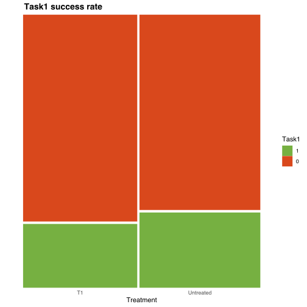

16 Association between categorical variables
We’ll start our little journey on statistical tests in R with the ones used to evaluate the association between categorical variables.
There are two tests used to test if two categorical variables are independent or not: Fisher’s exact test and Chi-Squared test. They interpretation of the p-value of these tests is the same, as in both cases a p-value < threshold (e.g. 0.05) means that we reject the null hypothesis that the two variables are independent.
The first one (Fisher’s) is used only when we have a small sample size 2x2 contingency matrix (so when the two categorical variables have 2 categories each) and at least one expected value is < 5. In the same scenario, but with all expected values > 5, Chi-Squared test with Yates correction is used, while in all other scenarios it is used Chi-Squared test without correction.
Here, we will see some examples on when to use these tests. Let’s load the required libraries and our data first:
# 1. Load packages
suppressPackageStartupMessages(library(tidyverse))
suppressPackageStartupMessages(library(ggplot2))
suppressPackageStartupMessages(library(ggmosaic))
suppressPackageStartupMessages(library(vcd))
# 2. Load data
df <- read.csv("data/Stat-test-dataset.csv")
# 3. Change come column types
df <- df %>%
mutate("sex" = factor(sex),
"treatment" = factor(treatment, levels = c("T1", "Untreated")),
"Task1" = factor(Task1, levels = c(1, 0)),
"Task2" = factor(Task2, levels = c(1, 0)),
)
str(df)'data.frame': 600 obs. of 7 variables:
$ sex : Factor w/ 2 levels "Female","Male": 2 1 2 1 2 1 2 1 2 1 ...
$ age : int 3 3 3 3 3 3 3 3 3 3 ...
$ treatment: Factor w/ 2 levels "T1","Untreated": 2 2 1 1 2 2 1 1 2 2 ...
$ weight : num 6.43 3.42 4.97 4.63 7.31 3.27 5.58 3.27 5.9 4.22 ...
$ Task1 : Factor w/ 2 levels "1","0": 1 2 2 2 1 1 1 1 2 1 ...
$ Task2 : Factor w/ 2 levels "1","0": 1 2 2 1 1 2 2 1 1 1 ...
$ Task3 : num 222.4 202.3 36.7 221.8 178.8 ...ggmosaic package, we will use it to create mosaic plots of our data. You can install it through install.packages("ggmosaic").
Now that we have our data loaded, here are the comparisons we want to do:
- In Male at age 3 that have successfully done Task2, is there an association between the treatment and the success on Task1?
- In Female at age 15 that have successfully done Task1, is there an association between the treatment and the success on Task2?
- In Untreated mice, is there any association between the age and the success on Task1?
Now, for each comparison, we have to decide which test we want to use. To evaluate sample size and number of categories we will use table:
# 1. Filter data
male_3_task2yes_df <- df %>%
filter(sex == "Male", age == 3, Task2 == 1)
female_15_task1yes_df <- df %>%
filter(sex == "Female", age == 15, Task1 == 1)
untreated_df <- df %>%
filter(treatment == "Untreated")
# 2. Create contingency tables
male_3_task2yes_table <- table(male_3_task2yes_df$treatment, male_3_task2yes_df$Task1)
female_15_task1yes_table <- table(female_15_task1yes_df$treatment, female_15_task1yes_df$Task2)
untreated_table <- table(untreated_df$age, untreated_df$Task1)
# 3. Get sample size
male_3_task2yes_sample_size <- sum(male_3_task2yes_table)
female_15_task1yes_sample_size <- sum(female_15_task1yes_table)
untreated_sample_size <- sum(untreated_table)
# 4. Get max number of categories
male_3_task2yes_max_cat <- max(dim(male_3_task2yes_table))
female_15_task1yes_max_cat <- max(dim(female_15_task1yes_table))
untreated_max_cat <- max(dim(untreated_table))Now that we have all the info, let’s check them: In Male at age 3 that have successfully done Task2, is there an association between the treatment and the success on Task1?
1 0
T1 4 13
Untreated 5 13cat("Sample size:", male_3_task2yes_sample_size,
"\nMax number of categories:", male_3_task2yes_max_cat, "\n")Sample size: 35
Max number of categories: 2 What can we say?
- First of all, it is always recommended to look at the contingency table as starting point
- Sample size is low, it is a 2x2 contingency matrix. So we have to look at the expected values to decide whether to use Fisher’s exact test or Chi-Squared test with Yates correction
To do so, we will use chisq.test function, extrapolating the expected values from the results. I know, it is “silly” that we have to actually perform chi-squared test to get the expected values…
male_3_task2yes_expected <- chisq.test(male_3_task2yes_table)$expected
cat("Minimum expected value is:", min(male_3_task2yes_expected))Minimum expected value is: 4.371429As it is < 5, we will use Fisher’s exact test in this scenario.
In Female at age 15 that have successfully done Task1, is there an association between the treatment and the success on Task2?
1 0
T1 26 3
Untreated 7 14cat("Sample size:", female_15_task1yes_sample_size,
"\nMax number of categories:", female_15_task1yes_max_cat, "\n")Sample size: 50
Max number of categories: 2 What can we say?
- Sample size is low, it is a 2x2 contingency matrix. So we have to look at the expected values to decide whether to use Fisher’s exact test or Chi-Squared test with Yates correction
female_15_task1yes_expected <- chisq.test(female_15_task1yes_table)$expected
cat("Minimum expected value is:", min(female_15_task1yes_expected))Minimum expected value is: 7.14As it is > 5, we will use Chi-Squared test with Yates correction in this scenario.
In Untreated mice, is there any association between the age and the success on Task1?
1 0
3 20 56
7 39 35
15 42 34
30 69 5Sample size: 300
Max number of categories: 4 What can we say?
- Sample size is low, it is a 4x2 contingency matrix. So we have to use Chi-Squared test
Fisher exact test
Now that we have decided which test to use, let’s start evaluating if there is an association between the treatment and the success on Task1 in Male at age 3 that have successfully done Task2.
We already have the contingency table, and we know we should use the Fisher’s exact test; but, let’s do a mosaic plot that can be the then updated with the statistics and can be used a figure to show the results:
male_3_task2yes_mosaic <- ggplot(male_3_task2yes_df) +
geom_mosaic(aes(x = product(treatment), fill = Task1), alpha = 1) +
scale_y_discrete(expand = expansion(mult = c(0,0))) +
labs(y = "", x = "Treatment", title = "Task1 success rate") +
scale_fill_manual(values = c("1" = "#76B041", "0" = "#D9481C")) +
theme_classic() +
theme(axis.line = element_blank(),
plot.title = element_text(face = "bold", hjust = 0.07, size = 14),
axis.ticks.x = element_blank())
male_3_task2yes_mosaic
Great, let’s have a look again at the contingency table, and then perform Fisher’s exact test:
1 0
T1 4 13
Untreated 5 13
Fisher's Exact Test for Count Data
data: male_3_task2yes_table
p-value = 1
alternative hypothesis: true odds ratio is not equal to 1
95 percent confidence interval:
0.1281067 4.7303300
sample estimates:
odds ratio
0.8051144 How to interpret these data:
- odds ratio: it indicates the odds of success in Task1 of T1-treated mice compared to untreated, so it seems that the former perform worst than the latter in this task
- p-value: in this case, it indicates that the two variables are independent, so that there is no influence of treatment in the outcome of Task1 in Male at P3 that have successfully performed in Task2
Phi (φ) Coefficient
The Phi (φ) Coefficient is used as a measure of association, indicating the strength and direction of association between two binary categorical variables in a 2x2 contingency table. It ranges from -1 to 1, with values closer to -1 or 1 indicating stronger associations.
Our results have already indicated that there is no association of the two variables, but we will calculate it as it may be useful in other cases, where the Fisher’s exact test is significant. To do so, we will use the assocstats function from package vcd (this function returns multiple scores, we will take only phi):
[1] 0.04858192As expected, Phi Coefficient is very low. Let’s update our plot with these info:
n_untreated <- sum(male_3_task2yes_df$treatment == "Untreated")
n_t1 <- sum(male_3_task2yes_df$treatment == "T1")
pvalue <- case_when(male_3_task2yes_fisher_res$p.value > 0.05 ~ as.character(round(male_3_task2yes_fisher_res$p.value, 3)),
male_3_task2yes_fisher_res$p.value < 0.0001 ~ "< 0.0001",
male_3_task2yes_fisher_res$p.value < 0.001 ~ "< 0.001",
male_3_task2yes_fisher_res$p.value < 0.01 ~ "< 0.01",
male_3_task2yes_fisher_res$p.value < 0.05 ~ "< 0.05",
)
caption <- paste0("Task1 success rate (1: success; 0: fail) of Male P3 mice who have successfully performed in Task2 (n = ",
male_3_task2yes_sample_size, "), in the two treatment conditions (Untreated n = ",
n_t1, ", T1-treated n = ", n_untreated, "). Statistics calculated through Fisher's exact test.")
male_3_task2yes_mosaic <- male_3_task2yes_mosaic +
labs(subtitle = paste0("φ: ", round(male_3_task2yes_fisher_phi, 3),
", OR: ", round(male_3_task2yes_fisher_res$estimate, 3),
", p-value: ", pvalue),
caption = str_wrap(caption, width = 125)) +
theme(plot.subtitle = element_text(size = 10, hjust = 0.07),
plot.caption = element_text(hjust = 0, debug = F, margin = margin(t= 20)),
plot.caption.position = "plot")
male_3_task2yes_mosaicGreat! We have a nice figure to present!
Chi-Squared test with Yates correction
Now, let’s evaluate the scenario that has to be be assessed through Chi-Squared test with Yates correction.
As in Fisher’s exact test example, we’ll make the mosaic plot first:
female_15_task1yes_mosaic <- ggplot(female_15_task1yes_df) +
geom_mosaic(aes(x = product(treatment), fill = Task2), alpha = 1) +
scale_y_discrete(expand = expansion(mult = c(0,0))) +
labs(y = "", x = "Treatment", title = "Task2 success rate") +
scale_fill_manual(values = c("1" = "#76B041", "0" = "#D9481C")) +
theme_classic() +
theme(axis.line = element_blank(),
plot.title = element_text(face = "bold", hjust = 0.07, size = 14),
axis.ticks.x = element_blank())
female_15_task1yes_mosaicWow, here the difference is striking. Let’s see the contingency matrix and perform the test:
1 0
T1 26 3
Untreated 7 14female_15_task1yes_chisq_res <- chisq.test(female_15_task1yes_table, correct = T)
female_15_task1yes_chisq_res
Pearson's Chi-squared test with Yates' continuity correction
data: female_15_task1yes_table
X-squared = 14.799, df = 1, p-value = 0.0001196Compared to Fisher’s exact test, here we look just at p-value as odds-ratio are not calculated by default (this is because we can calculate OR only in 2x2 contingency matrix, and chisq.test can accept greater matrices). In this case, we can say that the outcome of Task1 can be due to treatment (remember: correlation or absence of independence is not causation!).
As this is a 2x2 contingency matrix and the odds ratio, we can use Phi Coefficient to measure the association between the two variables:
[1] 0.5868188There is quite a good positive association!
female_15_task1yes_or <- (female_15_task1yes_table[1, 1] * female_15_task1yes_table[2, 2]) / (female_15_task1yes_table[1, 2] * female_15_task1yes_table[2, 1])
female_15_task1yes_or[1] 17.33333Wow! The OR is huge!
This has to be inserted in the plot:
n_untreated <- sum(female_15_task1yes_df$treatment == "Untreated")
n_t1 <- sum(female_15_task1yes_df$treatment == "T1")
pvalue <- case_when(female_15_task1yes_chisq_res$p.value > 0.05 ~ as.character(round(female_15_task1yes_chisq_res$p.value, 3)),
female_15_task1yes_chisq_res$p.value < 0.0001 ~ "< 0.0001",
female_15_task1yes_chisq_res$p.value < 0.001 ~ "< 0.001",
female_15_task1yes_chisq_res$p.value < 0.01 ~ "< 0.01",
female_15_task1yes_chisq_res$p.value < 0.05 ~ "< 0.05",
)
caption <- paste0("Task2 success rate (1: success; 0: fail) of Female P15 mice who have successfully performed in Task1 (n = ",
female_15_task1yes_sample_size, "), in the two treatment conditions (Untreated n = ",
n_t1, ", T1-treated n = ", n_untreated, "). Statistics calculated through Fisher's exact test.")
female_15_task1yes_mosaic <- female_15_task1yes_mosaic +
labs(subtitle = paste0("φ: ", round(female_15_task1yes_phi, 3),
", OR: ", round(female_15_task1yes_or, 3),
", p-value: ", pvalue),
caption = str_wrap(caption, width = 125)) +
theme(plot.subtitle = element_text(size = 10, hjust = 0.07),
plot.caption = element_text(hjust = 0, debug = F, margin = margin(t= 20)),
plot.caption.position = "plot")
female_15_task1yes_mosaicThat’s another cool picture to show at your PI!
Chi-Squared test without correction
Finally, let’s see if there is any association between the age and the success on Task1 in untreated mice through Chi-Squared test.
As always, here is the mosaic plot:
untreated_mosaic <- ggplot(untreated_df) +
geom_mosaic(aes(x = product(age), fill = Task1), alpha = 1) +
scale_y_discrete(expand = expansion(mult = c(0,0))) +
labs(y = "", x = "Age", title = "Task1 success rate") +
scale_fill_manual(values = c("1" = "#76B041", "0" = "#D9481C")) +
theme_classic() +
theme(axis.line = element_blank(),
plot.title = element_text(face = "bold", hjust = 0.07, size = 14),
axis.ticks.x = element_blank())
untreated_mosaicIt seems that the success rate in Task1 increases over time in untreated mice. Let’s see the contingency matrix and perform the test:
1 0
3 20 56
7 39 35
15 42 34
30 69 5
Pearson's Chi-squared test
data: untreated_table
X-squared = 69.362, df = 3, p-value = 5.846e-15From this test, it is evident that the association between age and success in Task1 is significant. Let’s quantify it.
Cramer’s V
For contingency matrix that are bigger than 2x2 we cannot use Phi Coefficient to calculate the association, but we have to use Cramer’s V. The possible values are the same as Phi, and also the interpretation. To calculate it, the function is the same as for Phi, but here we take the value of Cramer’s V.
[1] 0.4808398There is quite a good positive association also here!
Let’s update our plot:
n_3 <- sum(untreated_df$age == 3)
n_7 <- sum(untreated_df$age == 7)
n_15 <- sum(untreated_df$age == 15)
n_30 <- sum(untreated_df$age == 30)
pvalue <- case_when(untreated_chisq_res$p.value > 0.05 ~ as.character(round(untreated_chisq_res$p.value, 3)),
untreated_chisq_res$p.value < 0.0001 ~ "< 0.0001",
untreated_chisq_res$p.value < 0.001 ~ "< 0.001",
untreated_chisq_res$p.value < 0.01 ~ "< 0.01",
untreated_chisq_res$p.value < 0.05 ~ "< 0.05",
)
caption <- paste0("Task1 success rate (1: success; 0: fail) of untreated mice (n = ",
untreated_sample_size, "), over time (P3 n = ",
n_3, ", P7 n = ", n_7, ", P15 n = ", n_15, ", P30 n = ", n_30,
"). Statistics calculated through Fisher's exact test.")
untreated_mosaic <- untreated_mosaic +
labs(subtitle = paste0("Cramer's V: ", round(untreated_cramer, 3),
", p-value: ", pvalue),
caption = str_wrap(caption, width = 125)) +
theme(plot.subtitle = element_text(size = 10, hjust = 0.07),
plot.caption = element_text(hjust = 0, debug = F, margin = margin(t= 20)),
plot.caption.position = "plot")
untreated_mosaicAmazing, we have ansewred all the questions through these 3 test. Now you are able to use them in your personal analysis!